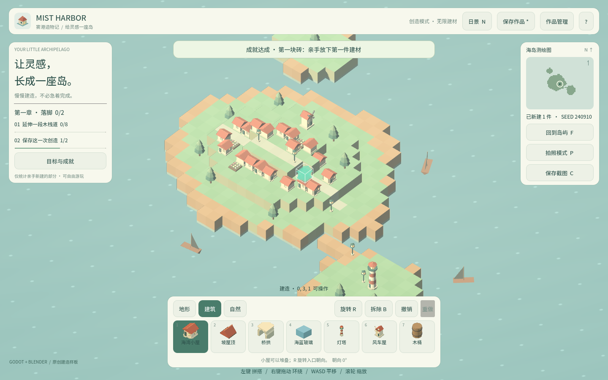
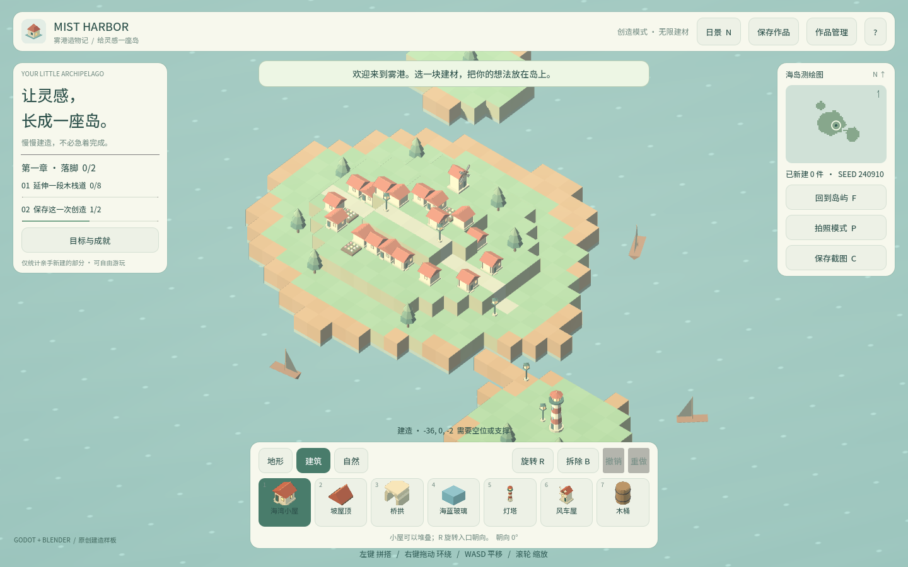

卷 7 · 第 34 章 发行渠道：把成品送到玩家面前
本章目标：客观对比几条现实可行的发行路径，
知道门槛、成本、适配工作量分别是什么，以及本项目为什么"Web 优先"。
对应任务：T46 | 对应文件：build/、build-win/
34.1 先看你手里有什么
| 产物 | 状态 | 能去哪 |
|---|---|---|
| --- | --- | --- |
build/（Web） | ✅ 已产出，37.68 MB wasm | 网页直发、itch.io、任何静态托管 |
build-win/mist-harbor.exe | ✅ 单文件 | itch.io、Steam、网盘分发 |
| Android / iOS | ❌ 未做（第 27 章） | — |
结论：现在就能发的是 Web 与 Windows。
34.2 四条路径对比
| 渠道 | 门槛 | 成本 | 适配工作 | 适合 |
|---|---|---|---|---|
| --- | --- | --- | --- | --- |
| 网页直发（自建/GitHub Pages） | 极低 | 几乎为零 | 服务器开压缩（第 28 章） | 试水、教学、作品集 |
| itch.io | 低 | 免费（可设价格/分成） | 上传 Web 或 exe | 独立小作品首选 |
| Steam | 中 | 上架费（约 100 美元/款，达标可退；以官方最新政策为准） | 商店页、成就/云存档对接、构建管线 | 商业发行 |
| 移动端商店 | 高 | 开发者账号年费 | 第 27 章的六维度改造 | 有把握再做 |
34.3 网页直发：最快的一条路
python tools/dev.py export-web
# 把 build/ 整个目录上传到静态托管即可| 托管 | 注意 |
|---|---|
| --- | --- |
| GitHub Pages | 仓库 → Settings → Pages；确认静态资源被压缩 |
| Vercel / Netlify | 默认压缩与 CDN，最省事 |
| 自建 Nginx | 记得 gzip_types application/wasm（第 28 章） |
| itch.io | 上传 zip，勾选"This file will be played in the browser" |
必做的三件事：
- 开压缩（否则 37 MB 直传）
- 有加载反馈（否则玩家以为坏了）
- 移动端浏览器地址栏配色（
theme-color已设）
34.4 Windows 单文件：发给人的最小摩擦
build-win/mist-harbor.exe 一个文件（第 26 章）：
- 网盘/邮件直发 → 对方双击就跑，不用装环境
- itch.io → 直接上传 exe
- Steam → 需要
Steamworks集成（成就/云存档若要打通）
商业级还差：图标、代码签名、版本号、关控制台黑框（第 26 章）。
34.5 上架前的最小检查清单
□ Web：压缩开启 + 加载反馈 + 无控制台报错（browser_smoke.py 的 logs 断言）
□ Windows：换了图标 / 签名（至少说明未签名） / 关了控制台
□ 许可：资产 CC0-1.0 已声明；字体 Noto Sans SC 为 OFL 1.1（需保留许可声明）
□ 版本：project.godot 与文档里的版本号一致
□ 隐私：本游戏不联网、不采集数据——在商店页写明是加分项
□ 回退：存档可导出 JSON（第 21 章），玩家不会因换机器丢作品📌 最后一条常被忽略：玩家能不能带走自己的作品——
这是本作"可导出 JSON"设计的一项真实商业价值。
🌩 在云端 agent（web-cb）里是什么样
| 🖥 本地路线 | 🌩 云端 agent（web-cb） | |
|---|---|---|
| --- | --- | --- |
| 构建产物 | 本地目录 | 云端构建 + 归档，团队直接下载 |
| 静态托管 | 自己配 | 云端预览即托管 → 分享链接就能玩 |
| 发布节奏 | 手工 | 云端可做成"合并即发布" |
| 注意 | 版本一致性 | 云端产物必须与本地同引擎版本，否则行为不同 |
| 建议 | — | 用云端做"内测链接"，用本地做最终发布物 |
🌩 云端最适合承担的角色：内测分发。一条链接给到测试者，省去打包传输。
34.6 常见坑速查（本章）
| 现象 | 原因 | 处理 |
|---|---|---|
| --- | --- | --- |
| 网页加载巨慢 | 没开压缩 | 检查 content-encoding |
| 玩家说"点了没反应" | 没加载反馈 / 没自动聚焦 | 第 25 章两个开关 |
| exe 被系统拦截 | 未签名 | 签名或在页面说明 |
| 商店页缺少许可声明 | 用了 OFL 字体 | 保留 Noto Sans SC 的许可声明 |
| 换机器作品丢失 | 存档在 user:// | 提供 JSON 导出（已有） |
| 平台费用与政策变化 | 引用了旧信息 | 以官方最新政策为准 |
34.7 本章作业
- 对比四条渠道的门槛与成本，说明本项目现在能上哪两条
- 列出网页直发必做的三件事，并解释第二件事为什么重要
- 说出上架前检查清单里的"许可"两项，说明各自要求
- 给自己项目选一条首发渠道，写出理由与需要的三项准备
🎓 教学提示（给教师 / 直播主）
- 概念锚点：渠道决定形态。Web 优先不是偷懒，是门槛最低的真实分发。
- 课堂演示：把
build/丢到静态托管，现场拿到一条可玩链接。 - 高频误解：学生一上来就想 Steam。先用数据说清门槛与适配工作量。
- 讨论题：如果只能选一条渠道，你选哪条？为什么？
- 批改要点：作业 3 要区分 CC0（资产）与 OFL（字体）的不同要求。
🖼 本章图集


📹 录屏分镜（9 分钟）
| 时间 | 画面 | 解说词要点 |
|---|---|---|
| --- | --- | --- |
| 00:00–01:30 | 手里有什么：build/ 与 build-win/ | "现在就能发两条。" |
| 01:30–03:30 | 四条路径对比表 | "门槛、成本、适配。" |
| 03:30–05:00 | 网页直发三件事 | "压缩 + 反馈 + 配色。" |
| 05:00–06:30 | 上架检查清单（含许可） | "玩家能不能带走作品。" |
| 06:30–09:00 | 作业 + 预告（社区运营） |
🎬 本章视频
🖼 配图清单
| 文件名 | 内容 | 生成方式 |
|---|---|---|
| --- | --- | --- |
34-web-delivery.png | Web 版运行画面（网页直发的形态） | python tools/course_capture.py --chapter 34 |
34-game-built.png | 建造中的作品（可分享的成果） | 同上 |
🎥 直播脚本（L3 片段，10 分钟）
- 开场："你的游戏，玩家在哪玩到？"
- 演示：静态托管一条链接，现场打开
- 互动：让观众报自己的首发渠道选择
- 收尾：预告社区运营
❓ 本章 FAQ
Q：Steam 的成就/云存档要接吗？
A：可选。本作成就存 user://（第 23 章），接 Steamworks 才能打通平台成就——属于额外工作量。
Q：itch.io 能卖钱吗？
A：可以（自行定价/接受捐赠，平台分成政策以官方为准）。具体费率请查官方最新说明。
Q：国内渠道（如微信小游戏）呢？
A：Godot 对其支持不成熟，通常需要额外适配层；本实训未覆盖，建议按第 27 章的排期思路单独评估。